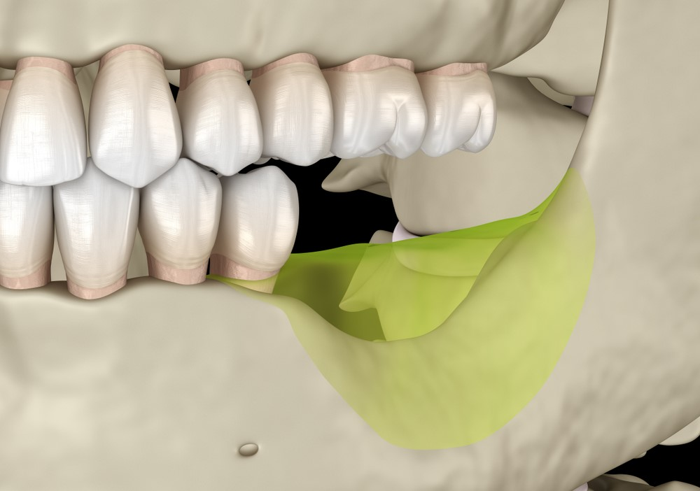
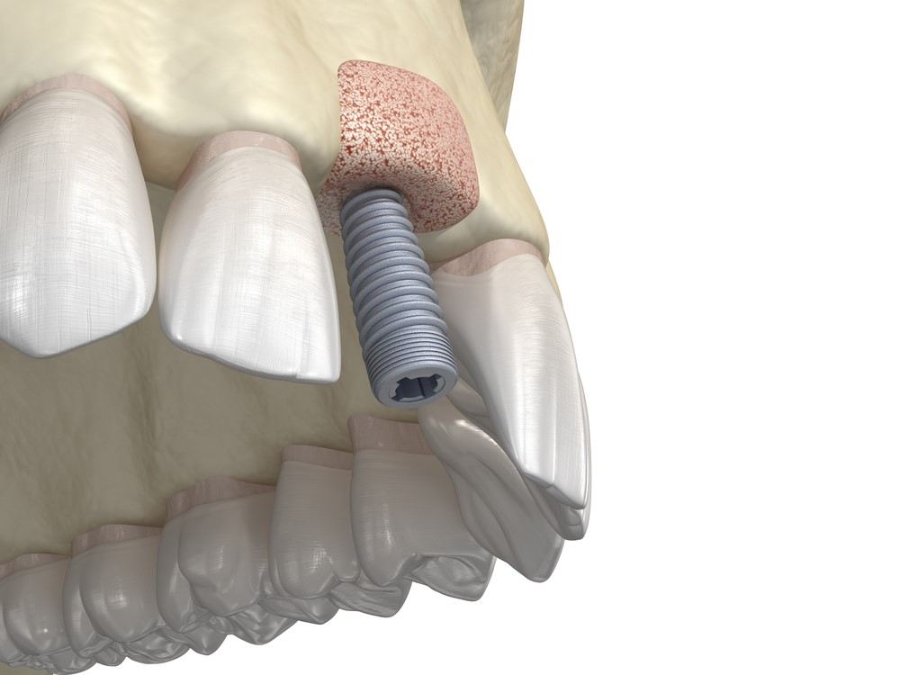
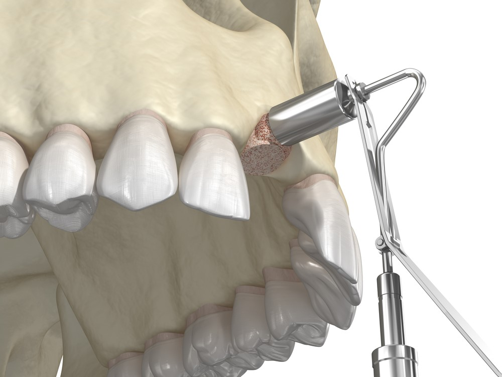
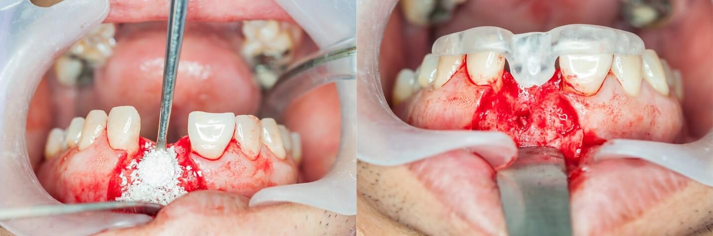

Dental Publications
This article explains the latest dental treatment techniques, and the most successful preventive measures for enjoying strong healthy teeth, in addition to dental implants, dental bridges, orthodontics, and other miscellaneous information

Bone graft procedure for a dental implant, the cost in turkey
There are many reasons for Osteoporosis and loss of jaw bone, which leads to tooth loss. After losing a tooth, the jawbone may shrink and lead to jawbone atrophy.
Table of content
What causes bone loss in teeth?
The most common cause of jawbone atrophy and loss of the bone around teeth is the loss of a tooth or multiple teeth without replacement.
The jawbone is preserved by the pressure and stimulation of chewing.
Jaw bone disease symptoms
Signs and symptoms of the jaw and joint disorders may include:
- Pain, swelling, redness, or tenderness of the jaw.
- Pain in one or both of the temporomandibular joints.
- Tooth loss
- Jaw stiffness.
- Aching pain in and around the ear.
- Difficulty in chewing or pain while chewing.
- Aching facial pain.
- Locking of the joint, making it difficult to open or close your mouth.
In case one or more of the above symptoms are present, we recommend an immediate visit to the nearest dental setup to further evaluate the condition and treat it the earliest possible.
Ilajak Medical team of General dentists and specialized dental practitioners treat conditions that affect the jaw, as well as the head and neck.
They work professionally to ensure the best possible approach to treatment.
Osteoporosis of the jaw bone symptoms
Osteoporosis and tooth loss are health problems that affect many elderly men and women, as the bones become less dense and more vulnerable to fracture, and this condition can affect any bone in the body, although the hip bones, spine, and wrist are more often affected. Still, it affects the jawbones as well.
Jaw infection symptoms
The persistence of tooth decay without treatment leads to the spread of the infections to the jaw bone, which means that neglecting treatment leads to the formation of bacteria that cause the inflammation, and the inflammation can spread to the jawbone, causing health problems, including symptoms of jawbone infection or a tooth abscess, which are:
- Mouth or jaw pain.
- Redness or swelling.
- Pus draining from the area
Pain in cheekbone and teeth
Jaw pain can be common, like a toothache, or serious, like a heart attack.
The jawbone, also called the mandible, connects to your skull through a pair of joints, known as the temporomandibular joints, and are located directly in front of the ear, to help open and close the mouth.
The jaws also carry teeth and gums, and they can be sensitive to heat, cold, or pressure, and if you do not keep them clean, they are vulnerable to infection that causes bone pain.
All of this can cause bone pain in case of any neglecting or careless behaviors.
Jaw bone cancer
Jaw tumors and cystic fibrosis, sometimes called dental tumors and cysts, can vary greatly in size and severity.
These growths are usually non-cancerous (benign), but they can be cancerous and invade the surrounding bone and tissue and may displace the teeth.
Dental bone abscess
The abscess arises in the head region due to tooth decay that has not been treated, or gingivitis that has not been addressed, and the abscess forms, and if it is not emptied, the infection may spread to the jaws and other areas of the head, neck and the rest of the body, and it may have serious consequences for life.
Jaw atrophy
The atrophy of jaw bone is a very serious health issue, starting with the change of facial features and extending to a major impact upon one‘s health and social discomfort.

Main causes of jawbone atrophy:
- The bone tissue starts deteriorating in areas of missing teeth as there is no necessary masticatory pressure
- Jawbone deterioration also settles in under dental bridges and removable dentures as there is no masticatory pressure as well
- The jawbone might be damaged by periodontitis
The process of jawbone deterioration and further tooth loss is irreversible – Ilajak Medical with a team of highly experienced and professional dentists can offer the best suitable treatments.
Bone graft from hip to jaw in Turkey
Bone grafting is a surgical procedure to rebuild or repair bone.
Through the grafting of healthy bone tissue, we can reconstruct the lost bone and supportive tissues.
Some people who wish to have dental implants do not have enough bone in their jaw to fix the implants tightly, and they need a treatment called bone grafting.
In bone grafting, bone particles or mass are taken from their bodies or other natural/artificial sources.
Ilajak Medical are distinguished, just as Turkey is distinguished by using the latest and modern science in the field of bone grafting, by the most skilled and experienced dentists, at nominal prices compared to other countries of the world.

How to slow down bone loss in teeth?
By visiting a professional and trustworthy dental setup, bone loss can be prevented by giving the jawbone an artificial tooth with a root that can exert the same or similar pressure as natural teeth.
How to regrow bone around teeth?
Bone can regrow and avoid further bone loss by chewing stimulation or by placing a bone graft by a professional dentist to compensate for bone loss.
Dental bone loss surgery cost in Turkey
The cost of bone grafting depends on health condition, the treatment plan, the source of the bone graft, or the type of bone chosen for treatment.
The exact price is determined after the medical examination, at Ilajak Medical we offer the most advanced bone grafting techniques.
Each patient receives a comprehensive medical examination, which includes a 3D computer tomography, as bone grafting is the key to the success of dental implants.
It should be noted that the prices of the jaw bone grafting range between 300 euros and 1000 euros, depending on the previously mentioned factors.
Contact us for a FREE consultation and find the most suitable treatment!
Bone graft procedure steps
If you are interested in dental treatment and cosmetic dentistry or dental implants, bone grafting is an important factor to obtain satisfactory and successful results.
A piece of bone is removed from another part of your jaw or body, such as your hip, and implanted into the jawbone. Often, commercially available artificial bones are used.
It takes several months for the bone to be ready for dental implants.
Fortunately, this is a routine procedure and PAIN-FREE.!

Best bone graft material for dental implant
Calcium based materials have been most commonly used as bone graft substitutes. Calcium hydroxyapatite (HA) has been shown in several series to be a useful biocompatible osteoconductive material, which provides a scaffold for bone ingrowth.
Allograft materials are also widely used in dentistry and are preferred by most dental practitioners.
Dental bone graft healing pictures

The dental bone graft success rate
Success rates vary according to different cases, techniques, and used materials.
- Compound artificial bone grafts have a survival rate of 99.6% and a success rate of 66.06%.
- As for bone grafts from another person, it has a 90.9% survival rate and an 82.8% success rate.
What causes extra bone growth in the mouth?
An impacted tooth can cause excessive bone growth.
Bony growth which is called Tori may be associated with bruxism or tooth clenching and grinding.
The size of the tori may fluctuate throughout life but they do tend to get bigger over time
Another form of bone growth called Exostosis is often the result of some trauma or injury to the gums and bones underneath. Exostosis of the mouth or jaw is called buccal exostosis.
When does your lower jaw stop growing?
Mandibular growth was found to involve an upward and forward rotation, a result of posterior vertical growth exceeding anterior vertical growth.
By the end of your teen years, almost at the age of 15 most of your jaw growth has already happened.
Some men get a small growth spurt in the late teens and very rarely there can be another in the 20s. The jaws stay roughly the same size until the 40s or 50s, at which point the facial skeleton starts to shrink again.
When does the female jaw stop growing?
In females, the jaws usually stop growing around the ages of 16-17.
Ilajak Medical© | A passion for care.
Latest Articles, Health News, Clinical Research, and more.
Keratoconus and cataracts , symptoms and types
What is Keratoconus, How it looks and what are the symptoms? Also, find out Keratoconus’s types and stages , Learn more with ILAJAK Medical.
Best Spa Resorts with Medical Services clinics in Turkey.
In this article, we will learn about the importance of health resorts and the treatment services they offer and the top and famous health & medical resorts in Turkey
Zirconia teeth type and costs in Turkey 2021
Zirconia dental crowns and bridges are used to treat and protect the affected teeth due to decay or fractures, etc, In this article we will learn about the advantages and drawbacks of Zirconia Crowns and bridges
Benefits of porcelain teeth and costs in Turkey 2021
Porcelain crowns and veneers are used to strengthen and protect damaged teeth due to decay or cracks or any other reason. In this article, we will discover dental porcelain and its advantages and risks.